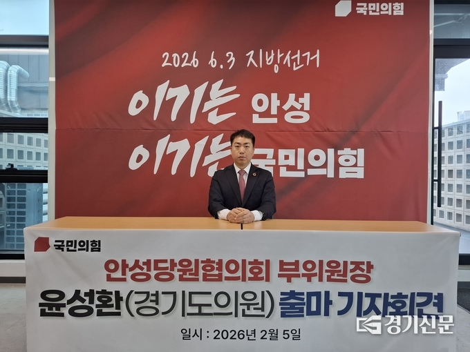
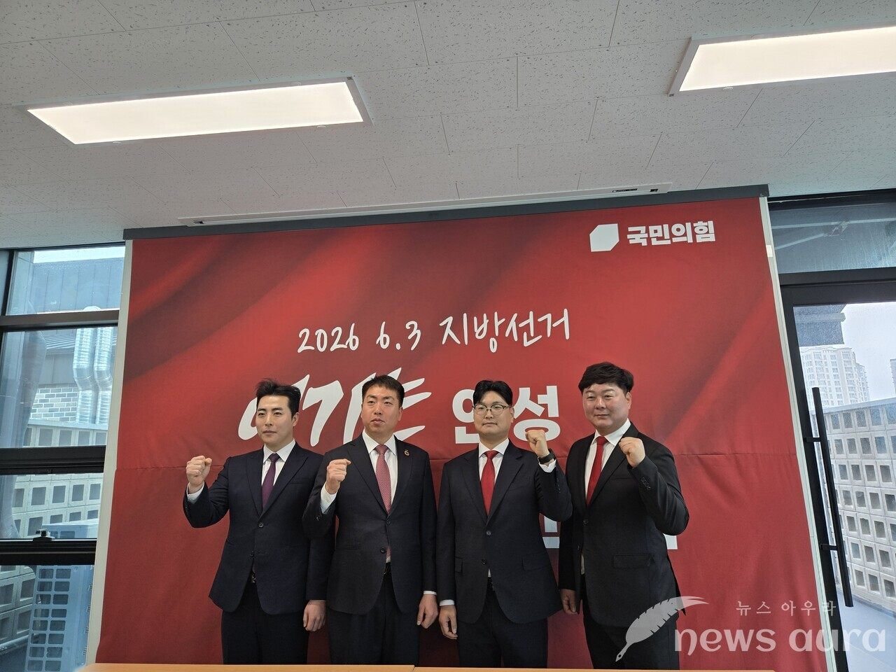
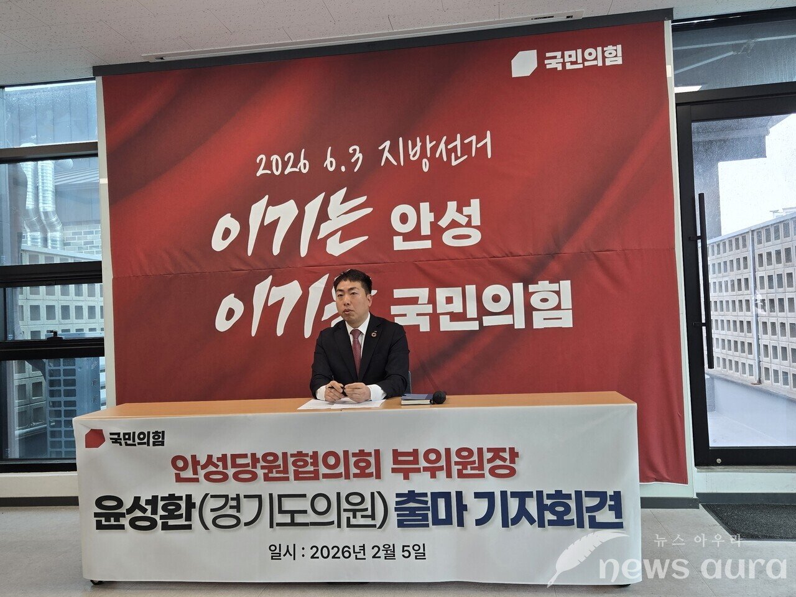
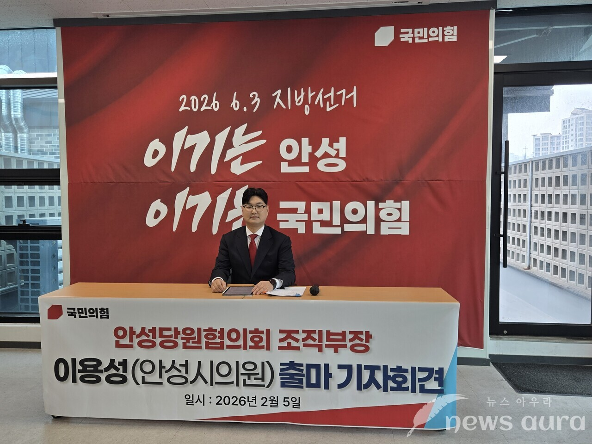
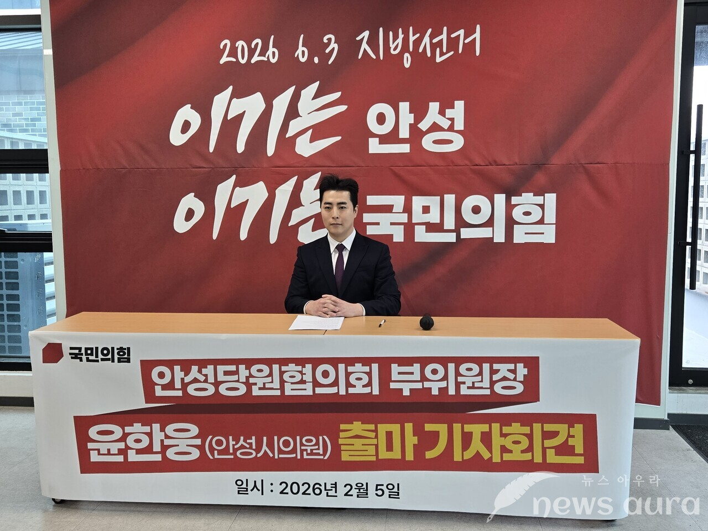
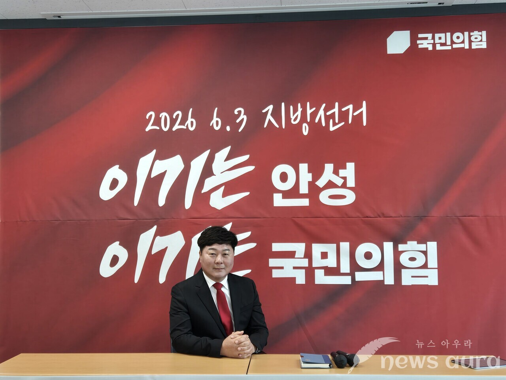

정치신인
동안성 토박이
경기도의원 예비후보 · 안성시 제2선거구
멈춰 선 동안성, 이제는 뚫겠다
규제를 돌파해 발전의 발판으로
경기도의원 예비후보 · 안성시 제2선거구
멈춰 선 동안성, 이제는 뚫겠다
규제를 돌파해 발전의 발판으로
"안성에서 배우고 활동하며 시민과 함께
지역의 문제를 풀어왔습니다.
교통과 산업의 변화가 시민 한 사람 한 사람의
삶의 변화로 이어지도록 책임지는 도의원이 되겠습니다."

국민의힘 경기도의원 예비후보(안성시 제2선거구)
중첩 규제를 돌파해 동안성의 성장 엔진을 되살리겠습니다
동안성의 교통과 생활 인프라를 근본적으로 개선하겠습니다
자연과 사람이 조화로운 안성을 만들겠습니다






안성시 당협위 활동

안성시 당협위 활동